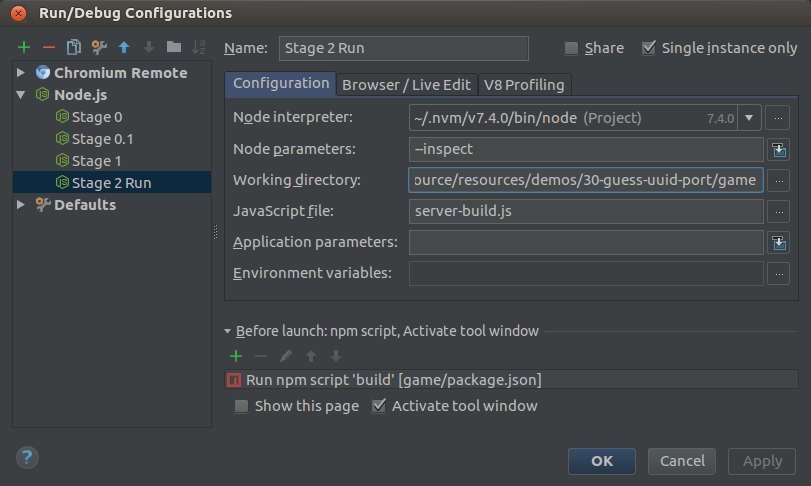
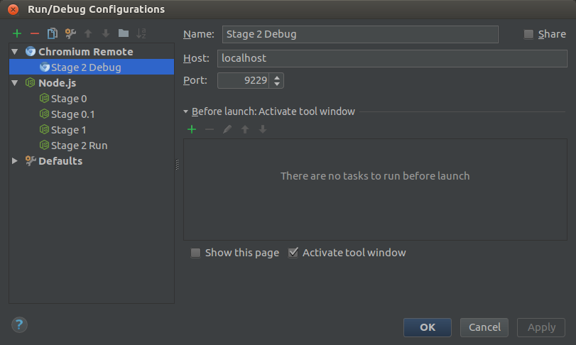
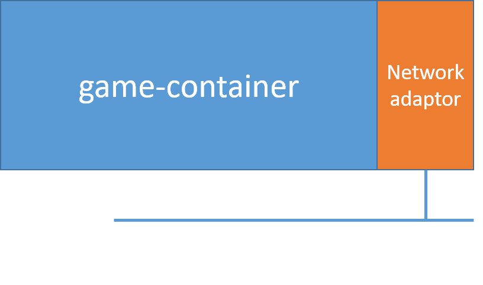
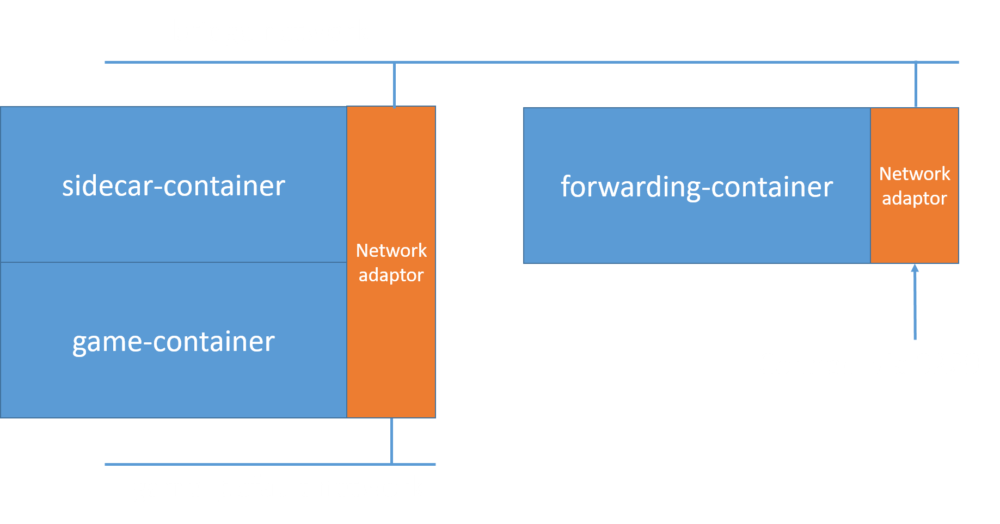

Docker logging
let uuidToGuess;
function resetUuid() {
uuidToGuess = uuid();
console.log(`uuid to guess: ${uuidToGuess}`);
}$ docker build . -t game:s1
Sending build context to Docker daemon 12.85MB
Step 1/7 : FROM node:8
#... truncated
Removing intermediate container 0c8b21542167
Successfully built 455d9c957892
Successfully tagged game:s1
$ docker run -d -p8080:8080 game:s1
11e228cfbf32c68a20735bb4d719b956591b6e7bb77b78b212dff33f619191de
$ docker logs 11e228c
uuid to guess: 55c8f651-0181-40f7-b6a8-07dea150c86f
Server running on port 8080
Winning with logs
Disclaimer
Logging is a powerful tool, when used correctly.
Open a port
* Versions 7.7 and older use debugger protocol


"Remote" debugging locally
FROM node:8
WORKDIR /work
COPY ./ /work/
#RUN npm install
#RUN npm run build
EXPOSE 8080
EXPOSE 9229
CMD ["node", "--inspect=0.0.0.0:9229", "server-build.js"]$ docker run -d -p8080:8080 -p9229:9229 game:s2
11e228cfbf32c68a20735bb4d719b956591b6e7bb77b78b212dff33f619191de
Docker Compose
docker-compose.yml
version: '2'
services:
deployment:
build: ./
image: game-deployment
ports:
- "8080:8080"
debug:
build:
context: ./
dockerfile: Dockerfile.debug
image: game-debug
ports:
- "8080:8080"
- "9229:9229"$ docker-compose build debug
$ docker-compose up -d debug
$ docker-compose down
Running with docker-compose
Docker networking
$ node server-build.js
Server running on port 8080
$ ps -C node
PID TTY TIME CMD
7433 pts/15 00:00:00 node
$ kill -s USR1 7433
Result:
$ node server-build.js
Server running on port 8080
Starting debugger agent.
Debugger listening on 127.0.0.1:5858
$ docker run -d game:s0
c6985986393a2cee97bbb53de8a172176d4662edf9bd2472be61eaf656b2a2f7
$ docker logs c6985
Server running on port 8080
$ docker kill -s SIGUSR1 c6985
c6985
$ docker logs c6985
Server running on port 8080
Debugger listening on ws://127.0.0.1:9229/619d5499-4c9d...
For help see https://nodejs.org/en/docs/inspector
Signaling our node app


Socat is a command line based utility that establishes two bidirectional byte streams and transfers data between them.
docker run -d --name socat-attach --network=container:${TARGET_CONTAINER} \
socat-image socat TCP-LISTEN:${TEMP_PORT},fork TCP:127.0.0.1:9229
${TARGET_CONTAINER} is the container ID${TEMP_PORT} is a port to connect sidecar to forwarding containerdocker run -d -p 9229:9229 --name socat-fw socat-image socat \
TCP-LISTEN:9229,fork TCP:${TARGET_IP}:${TEMP_PORT}
${TARGET_IP} is the targets IP${TEMP_PORT} is a port to connect sidecar to forwarding container$ docker inspect ${TARGET_CONTAINER}
#...
"Networks": {
"bridge": {
#...
"Gateway": "172.17.0.1",
"IPAddress": "172.17.0.2",
"IPPrefixLen": 16,
"IPv6Gateway": "",
"GlobalIPv6Address": "",
"GlobalIPv6PrefixLen": 0,
"MacAddress": "02:42:ac:11:00:02",
"DriverOpts": null
}
}
Putting it all together!
Pros:
Cons: